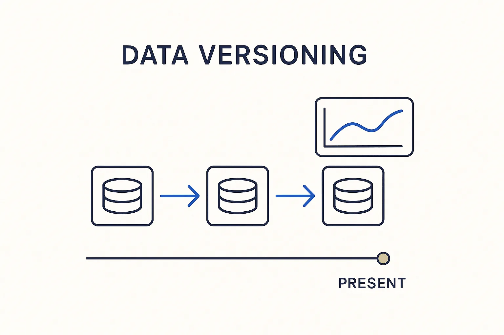

Track how the data changes over time — bi-temporal SCD2 with redelivery support — so you can ask what the data looked like, and what you knew, at any point in the past.

> Track how the data changes over time — bi-temporal SCD2 with redelivery support — so you can ask what the data looked like, and what you knew, at any point in the past.
Data versioning is the discipline of keeping the history of the *data* itself: not just the current value, but every value it has had, with the dates that make time queryable. The workhorse is bi-temporal SCD2 — two timelines, one for when something was true in the world and one for when the platform knew it — extended with redelivery support so a corrected or re-sent load slots into history without rewriting it. Ask “what did this record say on the first of March, as we understood it then?” and the answer is a query, not an archaeology project.
It is the twin of model versioning, and the pair matters. Data versioning captures how the *data* changed; model versioning captures how the *model and platform* changed. Confuse the two and history lies: a value that looks like a data change might really be a model change, and only tracking both clocks tells them apart. Together they let you reconstruct not just the numbers but the system that produced them, at any point in time.
This is the foundation audits, reconciliations and reality checks stand on. You cannot prove new equals old, or explain why a number moved, without a faithful record of what the data was and when. Version the data, and the past stays answerable.
Where it lives: the temporal layer of Breakthrough Modeling — the data’s own history, kept queryable.